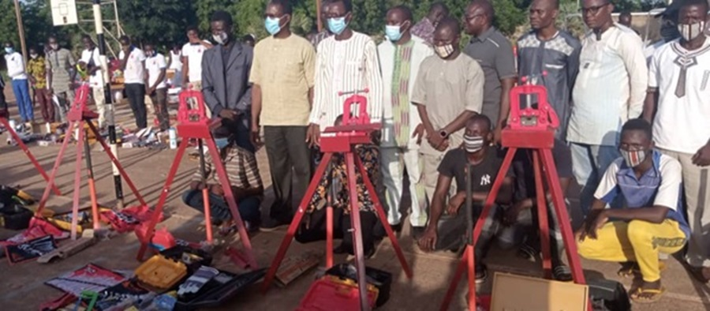
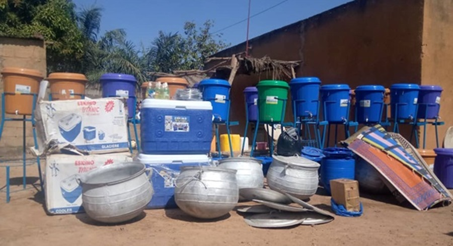

1. Renforcement de capacité des jeunes et employabilité
Dans le cadre du Burkina Faso Régional Programme, financé par l’USAID en 2021, une initiative a été mise
en œuvre pour promouvoir l’autonomisation économique des jeunes de la commune de Fada à travers des formations
professionnelles ciblées. Un processus de sélection transparent a permis d’identifier des jeunes hommes et femmes
motivés, en situation de vulnérabilité, et désireux de contribuer au développement de leur communauté.
Ces bénéficiaires ont été formés dans plusieurs domaines porteurs, notamment l’électricité solaire, la restauration,
la menuiserie et la mécanique. À l’issue de chaque formation, les jeunes ont été équipés de kits professionnels
complets adaptés à leur spécialité.Cette initiative vise à créer des opportunités concrètes d’auto-emploi, à favoriser
l’inclusion socio-économique, et à renforcer l'accès aux services de base dans les communautés rurales à travers les
compétences locales.


2. Sensibilisation sur la cohésion sociale et la consolidation de la paix
En 2020, dans le cadre de ses efforts pour renforcer la paix et la stabilité communautaire, le Burkina Faso Regional Programme (BFRP) a organisé une formation à l’intention des chefs coutumiers de la province du Gourma sur la cohésion sociale et le vivre-ensemble. Cette initiative visait à renforcer les capacités de ces leaders traditionnels, acteurs clés de la médiation locale, afin qu’ils puissent jouer un rôle actif dans la prévention des conflits, la promotion du dialogue intercommunautaire et le maintien de l’harmonie sociale. À travers des échanges participatifs et des outils adaptés au contexte local, la formation a permis de consolider leurs compétences en gestion pacifique des différends et en sensibilisation des populations aux valeurs de tolérance, de respect mutuel et de solidarité.

3. Autonomisation des femmes et résilience
En 2020, le Burkina Faso Regional Programme (BFRP) a mis en œuvre une initiative de renforcement des moyens de subsistance à Kantchari, en formant des bénéficiaires à l’élevage de volailles. Cette formation visait à promouvoir l’auto-emploi, améliorer la sécurité alimentaire et soutenir le relèvement économique des populations vulnérables. À l’issue de la formation, les participants ont été dotés de kits de démarrage composés notamment de poussins, d’aliments pour volailles, d’équipements d’abreuvement et d’alimentation, ainsi que de produits vétérinaires de base. Cette action s’inscrit dans une dynamique de soutien durable aux activités génératrices de revenus, tout en renforçant la résilience économique des communautés locales.
4. Renforcement du lien citoyen par l'accès universel à l'état civil
Le BFRP a également organisé et facilité l’établissement d’actes de naissance et de Cartes Nationales d’Identité Burkinabè (CNIB) au profit des populations des provinces du Gourma, de la Komondjari et de la Tapoa. Cette initiative vise à renforcer l’accès à l’identité légale, condition essentielle pour l’exercice des droits civiques et sociaux. Grâce à cette action, de nombreux citoyens disposent désormais des documents administratifs requis pour mener légalement leurs activités commerciales, accéder aux services sociaux de base, et participer pleinement à la vie économique et communautaire.